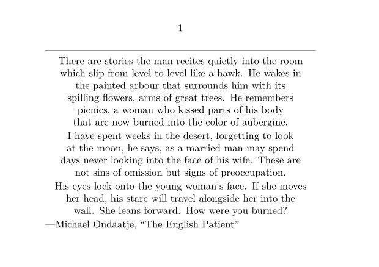

Contents
Summary
The command
\leftaligned
left-aligns a line
Settings
Description
Left-align a single line. No line-breaking is performed; to left-align paragraphs, see
\startalignment
.
Examples
Example 1
-
\setuppapersize[A7,landscape] \setupwhitespace[small] \starttext \startalignment[middle] \hairline There are stories the man recites quietly into the room which slip from level to level like a hawk. He wakes in the painted arbour that surrounds him with its spilling flowers, arms of great trees. He remembers picnics, a woman who kissed parts of his body that are now burned into the color of aubergine. I have spent weeks in the desert, forgetting to look at the moon, he says, as a married man may spend days never looking into the face of his wife. These are not sins of omission but signs of preoccupation. His eyes lock onto the young woman's face. If she moves her head, his stare will travel alongside her into the wall. She leans forward. How were you burned? \leftaligned{---Michael Ondaatje, \quotation{The English Patient}} \stopalignment \stoptext
- 